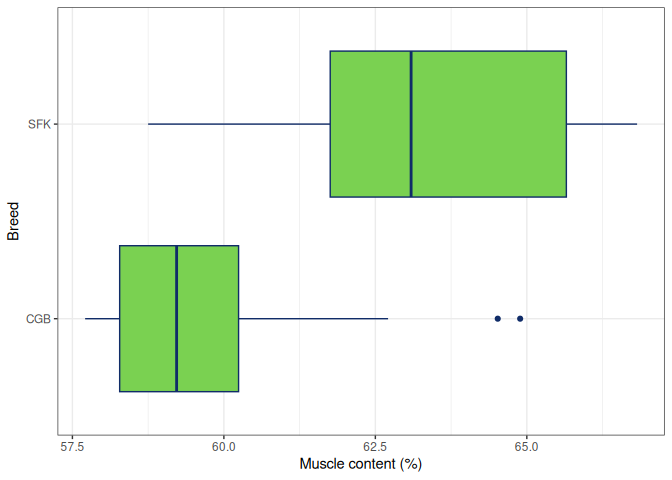

Overview
The pasagropasr package provides a collection of datasets generated through the research activities of the PAS-AGRO-PAS project. These datasets are the result of collaborative work by all PAS-AGRO-PAS partners.
The primary aim of this package is to make these datasets accessible to the research community, serving as a valuable resource for training young researchers and supporting studies in agriculture and environmental sciences.
Installation
You can install the latest stable version of the package from CRAN (if available) or the development version from GitHub.
# Install devtools package if not already installed
install.packages("devtools")
# Install the latest development version from GitHub
devtools::install_github("PAS-AGRO-PAS/pasagropasr")Dataset Descriptions
The package currently includes the following dataset:
| Dataset | Description |
|---|---|
lambBreeds |
Data on lamb carcass measurements and tissue composition, categorized by breed. |
Additional datasets may be added in future versions to enhance the package’s utility for agricultural and environmental research.
How to Use
Follow these steps to get started with the pasagropasr package:
- Install the package using CRAN or GitHub.
- Load the package using
library(pasagropasr). - Load a dataset using the
data()function.
Here is an example:
# Load the package
library(pasagropasr)
# Load the dataset
data(lambBreeds)
# Explore the structure of the dataset
str(lambBreeds)
#> 'data.frame': 40 obs. of 25 variables:
#> $ Lamb : num 9810 9819 9853 9902 9905 ...
#> $ Breed: chr "CGB" "CGB" "CGB" "CGB" ...
#> $ HCW : num 14.48 13.86 9.06 9.98 10.19 ...
#> $ F : num 279 297 269 296 262 301 297 280 297 280 ...
#> $ K : num 745 753 656 730 690 799 809 770 802 735 ...
#> $ G : num 222 207 191 192 192 207 196 210 210 198 ...
#> $ U : num 651 638 561 607 582 ...
#> $ CB : num 598 567 504 495 500 567 536 580 559 513 ...
#> $ C1 : num 2.7 3.2 2.8 1.3 0.9 1.5 1 1.4 1 0.5 ...
#> $ C3 : num 5.4 4.1 2.3 2.15 4 2.6 2 3.35 2.45 1.2 ...
#> $ C12 : num 2.3 2.1 2.5 1.5 1.45 1.4 1.2 1.7 1 0.5 ...
#> $ BT2 : num 24.3 21.7 18.5 17.3 16.8 ...
#> $ BT3 : num 20.4 21.7 17.6 16.3 15.9 17 20.3 20 18 13.6 ...
#> $ BT4 : num 17.1 18.9 15.4 12.9 11.9 ...
#> $ B1 : num 27.7 24.5 23.7 22.1 26.8 ...
#> $ B3 : num 26.5 22.2 20.1 22.7 17.5 24.3 25.5 23.3 26.4 21 ...
#> $ B12 : num 26.4 23.5 23.6 20.3 26.4 ...
#> $ LEA1 : num 11.4 10.1 9.6 7.9 9.05 ...
#> $ LEA3 : num 14.2 13.6 9.4 9.05 8.75 ...
#> $ LEA12: num 12.8 10.75 10.1 7.15 9.7 ...
#> $ MUS : num 59.1 59.3 58.4 62.2 58.9 ...
#> $ SF : num 7.21 8.07 8.24 4.59 6.59 6.37 5.48 7.22 5.68 4.54 ...
#> $ IF : num 10.91 8.84 9.6 5.91 8.34 ...
#> $ BO : num 20.7 21.6 21.9 26.1 24.4 ...
#> $ KKCF : num 2.1 2.11 1.83 1.18 1.79 1.92 1.77 1.93 1.51 1.32 ...Plot Example
Here is an example of a box plot showing the muscle content percentage by breed in the lambBreeds dataset:
library(ggplot2)
lambBreeds |>
ggplot() +
geom_boxplot(
aes(x = MUS, y = Breed),
colour = "#102C68",
fill = "#7AD151"
) +
theme_bw() +
labs(
x = "Muscle content (%)",
y = "Breed"
)
Requirements
pasagropasr requires R version 3.5 or higher. Additional suggested packages for extended functionality include:
-
ggplot2for visualization. -
readxlfor reading Excel files. -
tidyversefor data manipulation and visualization workflows.
License
This package is licensed under the GNU General Public License (GPL-3). This means you are free to use, modify, and distribute the software, provided that any derivative works also remain open source under the same license.